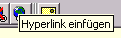

Ihre Texte im Informationsbereich bearbeiten und erstellen Sie mit dem Editor.
Dieser
Editor verhält sich so, wie Sie es von den gängigen Textverarbeitungsprogrammen gewöhnt sind. |
| Die
Toolleiste |
Sämtliche Funktionen sind leicht über die Toolleiste am oberen Rand des Editorfensters zu erreichen.

Wenn Sie mit der Maus länger auf einem Symbol verweilen, wird dessen Funktion eingeblendet. So erklären sich fast alle Symbole von selbst.
Für die allgemeine Verwendung gilt, dass eine Funktion auf einen mit der Maus markierten Bereich oder an der Stelle wo sich der Cursor gerade befindet angewendet wird.
|
|
Textformatierung
|
Die Schriftart und Schriftgröße können Sie mit Hilfe der Buttons H1 bis H6 oder dem darüber liegendem Pulldown-Menü bestimmen.
Standardmäßig ist die Schriftart "Arial", Schriftgröße
"3" voreingestellt.
Für die Ausrichtung des Textes stehen Ihnen die gewohnten Buttons
für links-, rechtsbündig und zentriert zur Verfügung.
Text-
und
Hintergrundfarben können Sie über die entsprechenden Buttons auf Ihren
markierten Text anwenden.
So lassen sich zum Beispiel wichtige Passagen besonders hervorheben oder vom
übrigen Text absetzen.
|
|
Bilder und Grafiken
|
Um dem Text ein Bild
hinzuzufügen, setzen Sie zunächst den Cursor an die gewünschte Stelle und
klicken auf das "Bildsymbol " am unteren rechten Rand der Editor-Toolleiste.
Wählen Sie nun ein zuvor hochgeladenes Bild aus und bestätigen Sie Ihre Wahl mit OK.
Für eine Übersicht der vorhandenen Bilder und Grafiken können Sie die Bildvorschaufunktion
benutzen. Markieren Sie hierzu lediglich das "Preview" Kästchen im
Fenster und klicken Sie auf einen Eintrag. In einem neuen Fenster wird Ihnen das
auf dem Server hinterlegte Bild in Originalgröße angezeigt. Möchten Sie ausgewählte Bild
übernehmen klicken Sie auf OK.
Das gewählte Bild erscheint nun an der zuvor
gewählten Stelle im Editorfenster.
Beabeiten:
Klicken
Sie auf das Bild um es mit gedrückter Maustaste beliebig innerhalb des Textes
zu verschieben.
Selbstverständlich können Sie das Bild in seiner Größe verändern.
Gehen Sie bei ausgewähltem Bild auf den Rand
des Bildes bis sich der Mauszeiger verändert und ziehen Sie dann mit gedrückter Maustaste das Bild auf die gewünschte Größe.
Markieren Sie das Bild
Achtung! nicht Auswahl sondern Markierung, also blau eingefärbt) und wählen Sie erneut das Bild
"Bild-Symbol" um weitere Bild-Eigenschaften einzustellen.
Möchten Sie ein Bild entfernen, so klicken Sie bitte auf das Bild und
anschließend entfernen.
Um das Seitenbild (jeweils oben Links)
zu entfernen geben Sie bitte einfach ein Leerzeichen in das Eingabefeld ein und
klicken auf übernehmen.
|
|
TABELLEN
|
 Um Tabellen zu erstellen klicken
Sie bitte auf das Symbol "Tabelle erstellen". Um Tabellen zu erstellen klicken
Sie bitte auf das Symbol "Tabelle erstellen".
Im folgenden Fenster können Sie die Attribute der Tabelle
angeben, z.B. Anzahl der Zeilen und Spalten, die Ausrichtung (Lage) der Tabelle innerhalb des Dokumentes, die Breite in Prozent oder Pixel, Farben, Rahmenbreite (falls gewünscht) und die Eigenschaften der einzelnen Zellen.
Um eine bereits angelegte Tabelle zu bearbeiten, klicken Sie in die Tabele
und anschließend auf das Symbol "Tabelle bearbeiten". Nachfolgendes Fenster ist analog zur Neuanlage einer Tabelle zu
bearbeiten. Die weiteren Tabellen-Symbole erklären sich von selbst.
|
|
LINKS
|
Um einen Link auf eine entfernte
Internetseite zu erstellen markieren Sie zuerst ein Wort oder einen Textabschnitt der als Link dienen soll. Danach wählen Sie aus der Toolleiste
"Hyperlink einfügen" und geben im folgenden Fenster die gewünschte
Internetadresse
(z.B. http://www.bundestag.de) vollständig ein.
Wünschen Sie, daß die durch den Link ausgeführte Internetseite im gleichen Fenster angezeigt wird, so lassen Sie bitte
bei der Angabe der Adresse das Eingabefeld "Target" frei.
Wünschen Sie das der Link in einem neu geöffneten Browser angezeigt wird, so geben Sie bitte im Linkfenster im Feld
"Target "_new" ein.
Mit erfolgter Bestätigung wird der Link
im Editor erstellt und ist im Anzeigemodus funktionstüchtig und farblich
markiert.
Das Bearbeiten
eines Link geht ähnlich leicht von der Hand.
Positionieren Sie einfach Ihren Cursor innerhalb des als Link bestimmten Textabschnittes und führen Sie erneut das Verlinkungswerkzeug aus der Toolleiste aus.
Nun können
Sie die Angaben ändern.
Markieren Sie den als Link bestimmten Textabschnitt und klicken Sie auf
"Hyperlink entfernen" um einen Link zu löschen.
|
|
Benutzen Sie im Editor-Fenster
nicht das Sonderzeichen "Hochkomma", da dieses Zeichen vom falsch interpretiert werden könnte und Sie eventuell Ihre Eingaben nicht übernehmen können.
Wir empfehlen Ihnen ausdrücklich entfernte Internetseiten nicht
innerhalb Ihrer Angebote einzufangen d.h. im gleichen Fenster anzuzeigen. Die
Netiquette verbietet dies und unter Umständen können Sie für die
"eingefangenen" Inhalte verantwortlich gemacht werden. Nutzen Sie die
Möglichkeit fremde Inhalte wie beschrieben über die Funktion _new in einem
neuen Browserfenster Ihren Besuchern anzuzeigen.
|